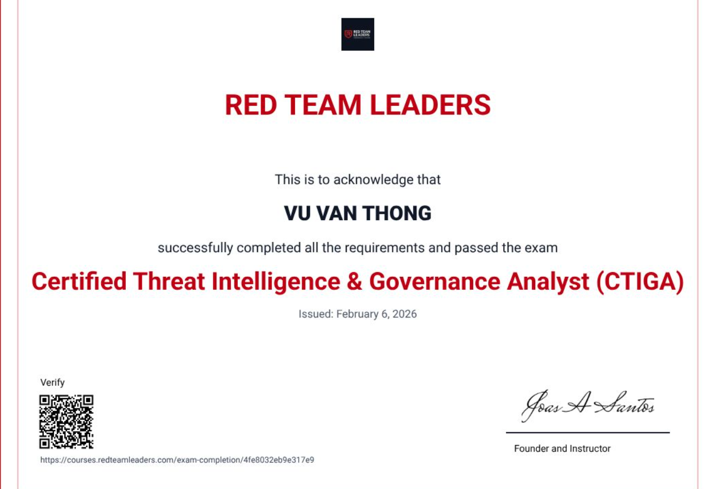

Ransomware Response Challenge
Nhật ký SOC về phát hiện, xác minh và xử lý một tình huống ransomware trong lab mini.
Sinh viên An toàn thông tin - HCMUTE
Tôi đang theo đuổi hướng SOC, Blue Team và Cloud Security. Điểm mạnh của tôi là tự dựng lab, đọc log, kiểm chứng giả thuyết và viết lại kết quả thành ghi chú rõ ràng để có thể dùng trong học tập, phỏng vấn và công việc thực tế.
Tôi quan tâm đến bảo mật mạng, penetration testing, malware analysis, cryptography, digital forensics và threat intelligence. Các mảng này giúp tôi nhìn sự cố từ cả góc tấn công lẫn phòng thủ, sau đó chuyển thành cách phát hiện và khắc phục cụ thể.
Wazuh, Windows Event Log, Sysmon, alert triage, incident timeline và threat hunting cơ bản.
OWASP Top 10, Burp Suite, Nmap, SQLMap, kiểm thử ứng dụng web và viết khuyến nghị khắc phục.
IAM, VPC, S3, CloudTrail, GuardDuty, Security Hub và các lỗi cấu hình cloud thường gặp.
Viết lab note, checklist, blog và báo cáo ngắn gọn để người khác có thể kiểm tra lại luồng xử lý.
Tôi ưu tiên những kỹ năng có thể chứng minh bằng lab: quan sát dữ liệu, kiểm tra giả thuyết, phân tích rủi ro, viết lại kết quả và tự động hóa các bước lặp lại.
Wireshark, Nmap, mô hình mạng, luồng traffic và kiểm tra bề mặt tấn công.
Burp Suite, OWASP ZAP, Metasploit, OWASP Top 10 và báo cáo phát hiện.
Phân tích hành vi, YARA cơ bản, Autopsy, FTK Imager, Volatility và bằng chứng số.
Python, Linux, C/C++, SQL, Bash và HTML/CSS/JavaScript cho công cụ học tập.
Các dự án được chọn để thể hiện đúng hướng nghề nghiệp: SOC lab, detection note, AWS security, web security và nền tảng lập trình phục vụ phân tích.

Dựng môi trường lab để thu thập log, tạo cảnh báo và luyện quy trình điều tra ban đầu.
Kết quả: hiểu luồng agent-server, cách đọc alert và cách ghi lại case điều tra.

Ghi lại các case brute-force, C2 beacon và ransomware response theo dạng timeline điều tra.
Kết quả: luyện tư duy từ dấu hiệu, bằng chứng, tác động đến hướng xử lý.

Tổng hợp ghi chú về IAM, VPC, S3, CloudTrail, GuardDuty, Security Hub và incident response.
Kết quả: có checklist kiểm tra cấu hình và nhận diện rủi ro cloud phổ biến.
Cuộc thi CTF cấp trường, rèn khả năng đọc đề, chia nhỏ vấn đề và xử lý bài bảo mật dưới áp lực thời gian.
HCMUTE - 2024
Bổ sung góc nhìn penetration testing, threat intelligence và governance để phòng thủ có bối cảnh hơn.
2024 - 2025

Nền tảng cloud security về identity, network, storage, monitoring và incident response.
2025

Blog là phần tôi muốn HR và anh/chị kỹ thuật xem kỹ nhất: nó thể hiện quá trình tự học, tự kiểm chứng và khả năng diễn đạt lại vấn đề bảo mật.
Nhật ký SOC về phát hiện, xác minh và xử lý một tình huống ransomware trong lab mini.
Case study về dấu hiệu C2 beacon, dữ liệu cần kiểm chứng và cách ghi lại hướng xử lý.
Tổng hợp vòng đời ứng phó sự cố trên AWS với GuardDuty, Detective, Security Hub và Config.
Tôi mong muốn được tham gia một team bảo mật có quy trình tốt, nơi tôi có thể học nhanh, làm việc cẩn thận và đóng góp bằng những việc cụ thể mỗi ngày.